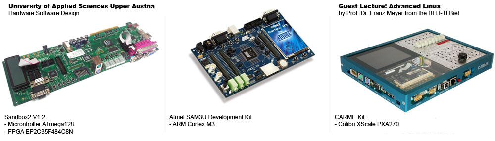

Bachelor’s Degree: Hardware Software Engineering
I finished my bachelor’s degree in Hardware Software Engineering at the University of Applied Sciences, Upper Austria. University started with the basics of computer organization and design, circuits and electronics, algebra and analysis, algorithms and went on into more experienced subjects like software development in C++ with object orientated programming and parallel software development (win32, pthreads), embedded software development in C and assembler as well as chip design on FPGA’s. We had courses about operating systems, especially real time, signals and systems as well as digital signal processing and control engineering. Furthermore I had the chance to make some further courses like software development in Java and Advanced Linux.
Most experiences I got from the exercises which included coaching, practice and equipment from the university. In the bachelor’s degree we developed on different hardware platforms, which are shown beneath.

The Sandbox2 is a development kit developed by the course Hardware Software Design. The kit contains different peripherals which where used to learn Assembly language, programming in C and development of FPGA designs. Our first programs on the ATmega128 were written in Assembly language which were reading and writing to I/O ports, ADC’s and using Interrupts. In a further course we made the same things in C with some additional peripherals like a Watchdog LCD Module or using an address data bus to communicate with the FPGA. Furthermore, we used the FPGA to create a RS232 receiver and transmitter, VGA and later on we used the FPGA for signal processing.
The SAM3U Dev. Kit was used for measurements with the Oscilloscope and Logic Analyzer. Questions of this course were timings of the processor clock, bit banding, direct memory access and interrupt latency.
The CARME Kit was used in a course held by Prof. Dr. Franz Meyer. The course was about Linux cross development. The CARME Kit contained an embedded Linux on which I learned to use I/O via sysfs and the implementation of device drivers.